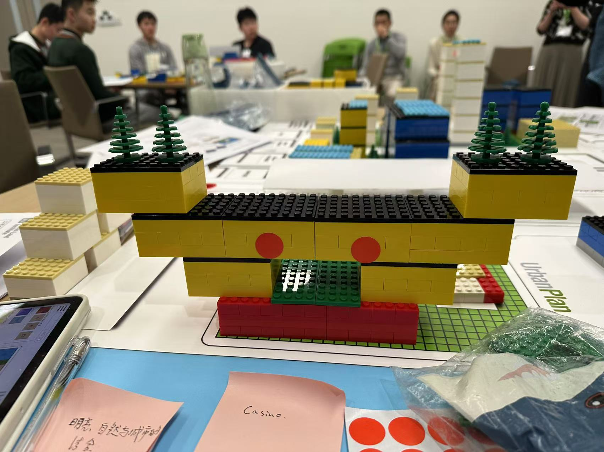
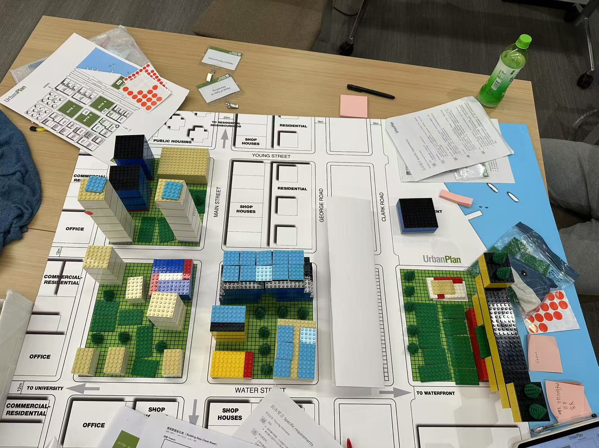
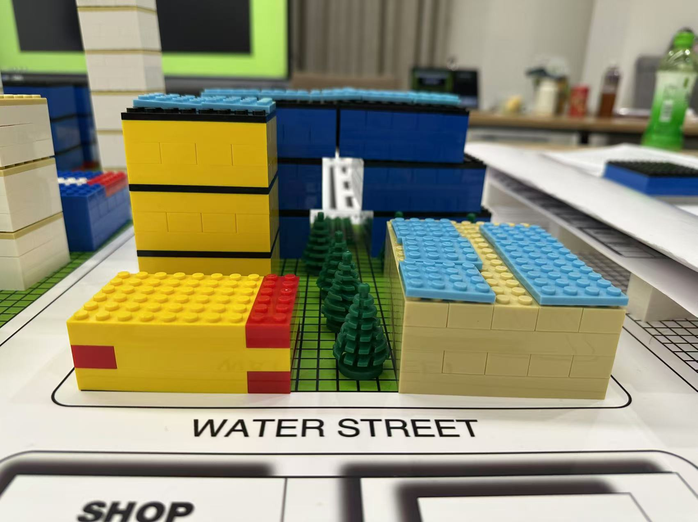
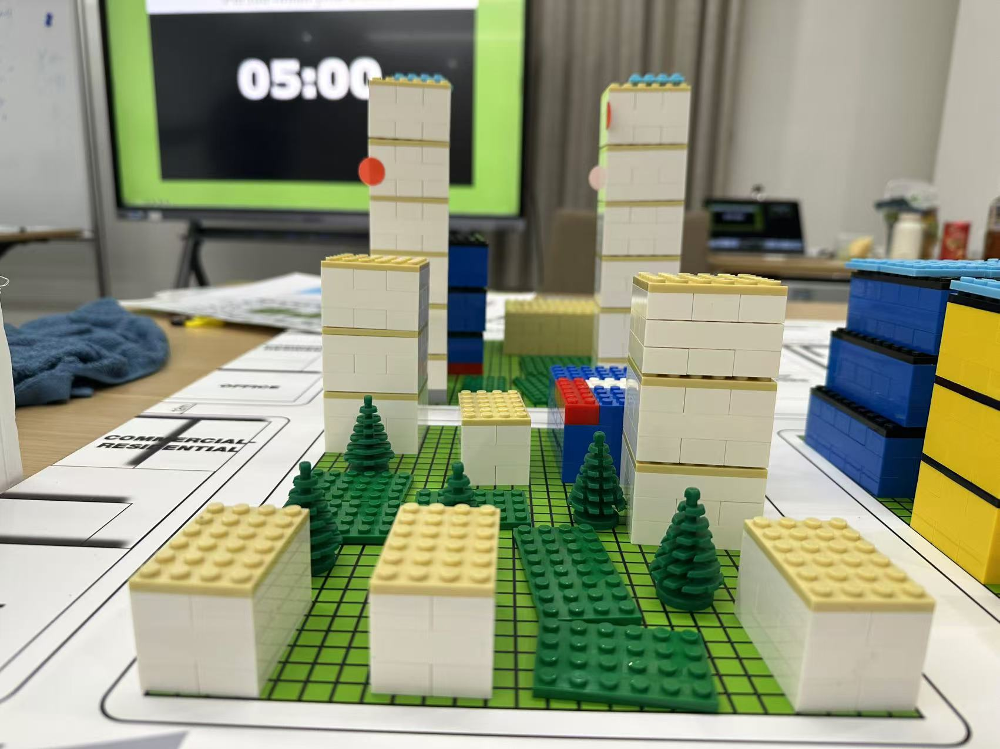
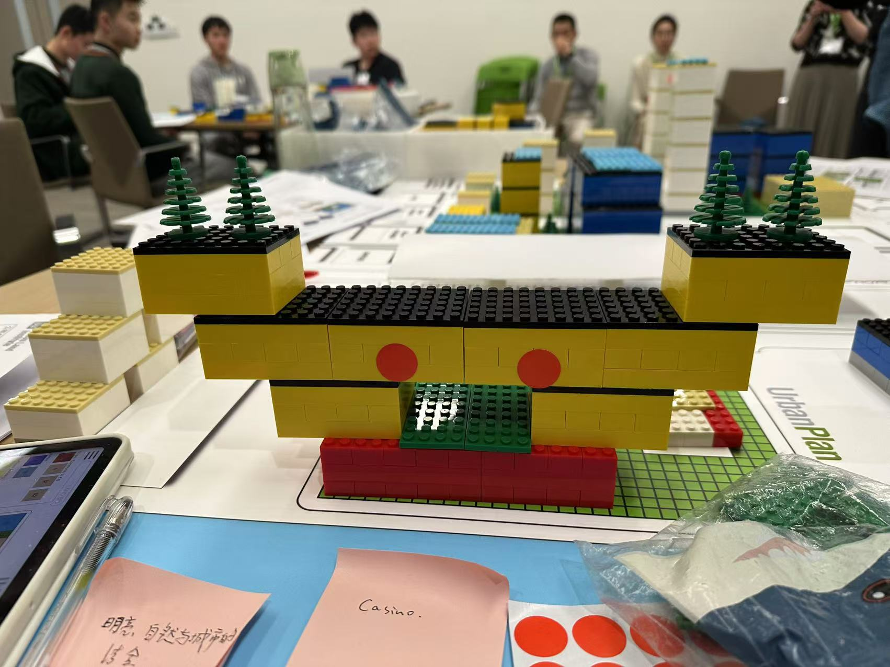
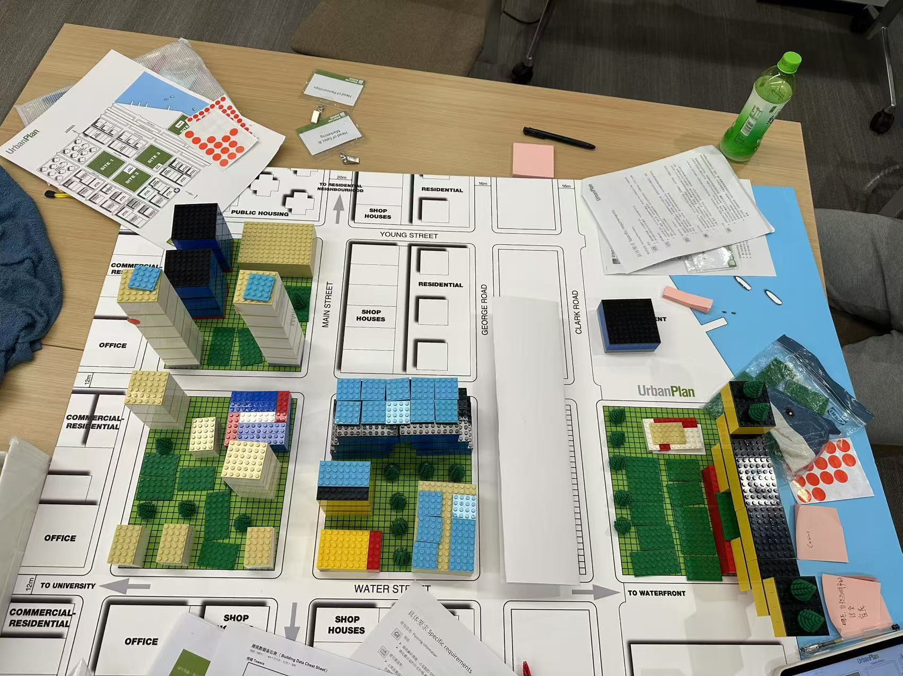
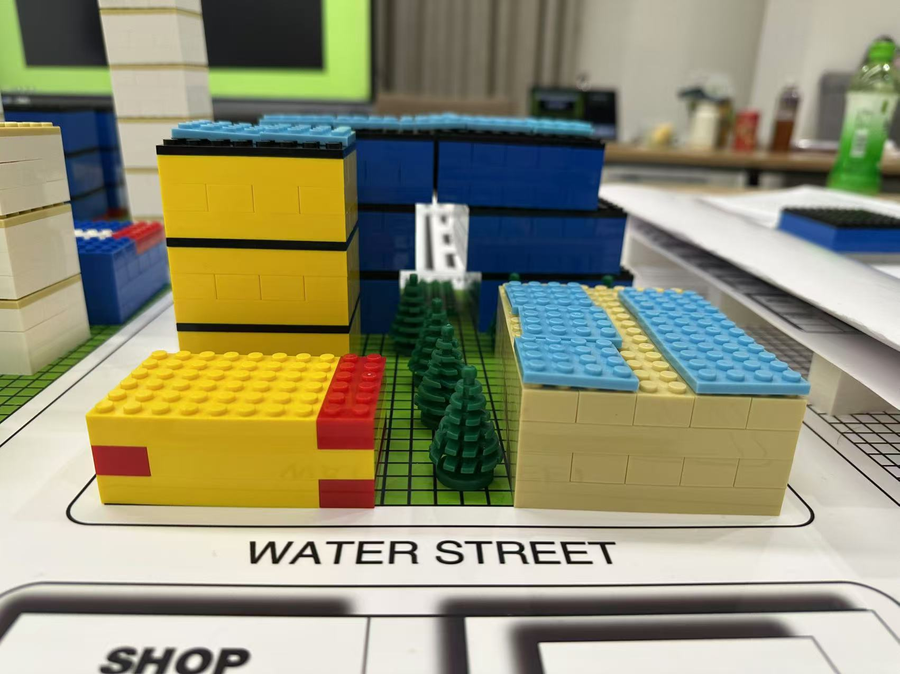
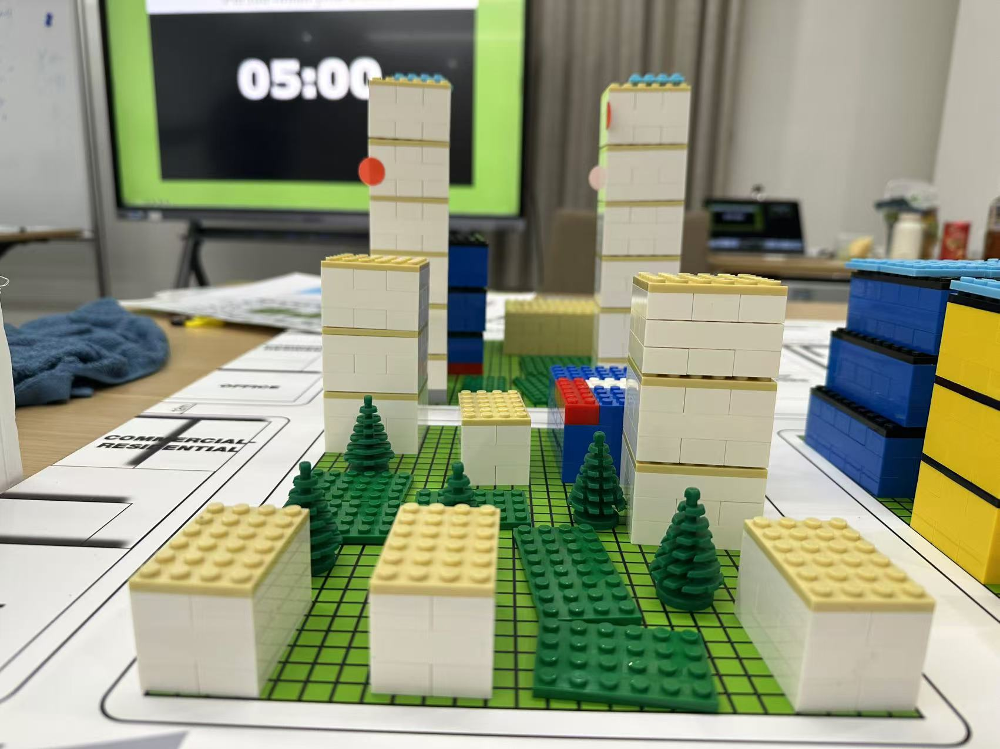

Collaborating with 10 clubs and student organizations, this initiative aims to promote sustainable practices environmentally, economically and socially, attracting more than 500 participants.
1. Loomberg Finance Club (Urban Planning Workshop)
Partnering with UrbanPlan, a course jointly developed by the Urban Land Institute (ULI) of the United States and UC Berkeley, Loomberg Finance Club has provided students with immersive simulation experiences of urban planning and community renewal. Participants worked in teams through role-playing, taking on roles such as financial directors, urban planners, and market advisors, to learn how to balance the interests of the economy, society, and the environment, and formulate sustainable development solutions. Team members also explored how financial decisions could shape sustainable cities, turning urban planning into an engaging exercise in balancing economic, social, and environmental needs.
Participants took on roles like city planners and green investment heads, tasked with revamping a virtual neighborhood. Choices had impacts, such as cutting down trees harming biodiversity. A mid-event “community survey” revealed local needs, forcing teams to adjust their plans. The team with the most balanced, thriving city was awarded a mini trophy, and everyone got insights into real sustainable urban projects.

 






